Algoritmos e Estruturas de dados
Unirios
Aula 05
Árvores e Árvores Binárias
BST · árvore binária balanceada · três travessias
Aula de implementação — primeira estrutura não-linear da disciplina.
Camada 1
Introdução
Pense numa árvore genealógica. Lá em cima está um casal de bisavós; logo abaixo, os filhos; mais abaixo, os netos; e por aí vai. Cada pessoa aparece uma única vez, está ligada à sua mãe ou pai por uma linha, e pode ter vários filhos abaixo de si (ou nenhum).
Algo que começa num ponto único, ramifica para baixo e nunca volta — essa é a ideia central da estrutura de dados chamada árvore.
Camada 2
O que é uma árvore
Uma estrutura hierárquica: nós ligados por arestas, com um nó especial — a raiz.
A partir da raiz, qualquer outro nó é alcançado por um único caminho.
Tenenbaum, cap. 5; Sedgewick, Parte 3; CLRS, cap. 10.4.
A primeira estrutura não-linear
Em listas, pilhas e filas, cada nó tem um único sucessor.
Na árvore, um nó pode ter vários filhos — é a primeira estrutura não-linear da disciplina.
Vocabulário — quem é quem
Os termos que nomeiam as partes da árvore:
- Raiz — o único nó sem pai.
- Filho e pai — quem aponta é o pai.
- Folha — nó sem filhos.
Vocabulário — como medir distâncias
- Subárvore — qualquer nó + tudo abaixo dele também é árvore.
- Altura — caminho mais longo da raiz até uma folha (em arestas).
- Profundidade de um nó — arestas da raiz até ele.
A subárvore ser árvore é a base da elegância recursiva do código.
Árvore binária
Cada nó tem no máximo dois filhos — esquerdo e direito.
Simples de codificar (dois ponteiros fixos) e rica o bastante para buscas e decisões.
BST — Binary Search Tree
Sobre a árvore binária construímos a BST — a versão realmente útil em prática.
É o foco do resto desta aula.

Turma, segundo Tenenbaum, a árvore é o primeiro grande salto depois das estruturas lineares — ela troca a sequencialidade por ramificação hierárquica. É exatamente essa troca que abre caminho para buscas em tempo logarítmico, como veremos na Camada 5. Tenenbaum, cap. 5 — Árvores
Camada 3
O nó da Aula 02, agora com dois ponteiros
Reaproveitamos o mesmo nó — só que com dois ponteiros
de ligação: esq e dir.
Estado externo: um único raiz.
Quando a árvore está vazia
Convenção: raiz == NULL ⇔ árvore vazia.
Caso contrário, descendo por esq e dir
a partir da raiz, qualquer nó é
alcançado em um único caminho.
A propriedade da BST
A árvore binária por si só ainda não tem utilidade prática para busca. O salto vem ao impor uma regra de ordenação entre cada nó e suas duas subárvores — é essa regra, abaixo, que define a BST (Binary Search Tree).
Para todo nó x, todos os valores na subárvore esquerda de x são menores que o valor de x, e todos os valores na subárvore direita são maiores que o valor de x.
Essa regra é recursiva — vale para a raiz, e para a raiz de cada subárvore, até as folhas. Consequência operacional: cada comparação descarta metade da árvore. É a fonte do tempo logarítmico.
Esta aula assume que não há chaves duplicadas — convenção mais comum em textos didáticos. Tenenbaum, cap. 5; CLRS, cap. 12.
As operações
Quatro famílias — repare que três dependem da altura h e só a travessia depende do total n.
- inserir — desce e aloca no primeiro
NULL. O(h) - buscar — mesma descida, sem alocar. O(h)
- remover — três casos (aula futura). O(h)
- travessias — visitam todos os nós. O(n)
As três travessias clássicas
Diferem só em quando o nó é visitado em relação aos filhos:
- Pré-ordem: nó · esq · dir — útil para serialização.
- In-ordem: esq · nó · dir — em BST, sai ordenado.
- Pós-ordem: esq · dir · nó — folhas antes do pai, ideal para liberar memória.
Existe ainda a travessia em nível (BFS) — volta em grafos.
Camada 4
TAD — Árvore Binária de Busca de Inteiros
Vamos agora formalizar a BST como Tipo Abstrato de Dados — listando, sem revelar implementação, todos os tipos envolvidos e todas as operações disponíveis com suas assinaturas. É o "contrato" que qualquer código C que use a BST pode invocar.
TAD Arvore Binaria de Busca de Inteiros
Tipos:
Arvore
Inteiro
Booleano
Operacoes:
criar() -> Arvore
vazia(Arvore) -> Booleano
inserir(Arvore, Inteiro) -> Arvore
buscar(Arvore, Inteiro) -> Booleano
pre_ordem(Arvore) -> sequencia de Inteiros
in_ordem(Arvore) -> sequencia de Inteiros
pos_ordem(Arvore) -> sequencia de Inteiros
Axiomas
Os axiomas fixam o significado das operações combinando-as entre si — sem dizer como elas são implementadas. Leia cada linha como "tal combinação tem este resultado". Repare em A4 e A7, que sintetizam, respectivamente, o coração da busca e a ordenação implícita da BST.
- A1.
vazia(criar()) = verdadeiro - A2.
vazia(inserir(A, x)) = falso - A3.
buscar(criar(), x) = falso - A4.
buscar(inserir(A, x), x) = verdadeiro— coração da BST: o que insiro, posso encontrar. - A5.
buscar(inserir(A, x), y) = buscar(A, y)sex ≠ y— inserir x não muda o status de busca de outros valores. - A6.
in_ordem(criar()) = sequência vazia - A7.
in_ordem(inserir(A, x))contém todos os elementos dein_ordem(A)mais x, em ordem crescente — a famosa "ordenação implícita".
Representação interna como tupla
Agora formalizamos a árvore como uma tupla matemática — uma forma compacta de listar tudo que a define: o conjunto de nós, as funções que ligam cada nó ao seu valor e aos seus filhos, e o ponteiro externo de entrada. Cada componente é detalhado logo abaixo.
A = (N, valor, esq, dir, raiz)
- N — conjunto dos nós da árvore.
- valor: N → ℤ — associa cada nó a um inteiro.
- esq: N → N ∪ {NULL} — filho esquerdo, ou NULL.
- dir: N → N ∪ {NULL} — filho direito, ou NULL.
- raiz ∈ N ∪ {NULL} — ponteiro externo para o topo.
Invariante: vazia ⇔ raiz = NULL.
Camada 5
Análise — tudo depende da altura h
Toda operação percorre da raiz até uma folha — o custo é h, que varia muito entre equilibrada e degenerada.
| Operação | BST equilibrada h ≈ log₂ n |
BST degenerada h = n − 1 |
|---|---|---|
buscar | O(log n) | O(n) |
inserir | O(log n) | O(n) |
remover | O(log n) | O(n) |
| travessias | O(n) | O(n) |
| espaço | O(n) | O(n) |
Travessia é sempre O(n): cada nó é visitado uma vez.
E se inserirmos em ordem?
Insira 1, 2, 3, 4, 5 numa BST vazia.
Cada novo vai à direita do anterior — a árvore
vira uma fila vertical.
Altura = n. Busca volta a O(n). Perdemos tudo.
A correção: rotações
Árvores balanceadas fazem pequenas rotações depois de cada inserção para manter a altura próxima de log n — sempre, não só na média.
Implementação fica para a aula dedicada à AVL.
Turma, as duas árvores balanceadas mais famosas são a AVL, proposta em 1962, e a rubro-negra, dos anos 1970. Quase toda estrutura de busca rápida que vocês usam — std::map do C++, TreeMap do Java, índices de bancos — está apoiada em alguma variante dessas duas ideias.
Camada 6
Variantes da família das árvores
A BST é só o começo. A mesma ideia central — nós ligados em hierarquia, busca descendo da raiz — se desdobra em uma família inteira de variantes, cada uma com uma restrição extra para resolver problemas diferentes do mundo real.
- BST — esta aula. Base para tudo que vem.
- AVL — BST balanceada por fator de altura. Tenenbaum, cap. 5.
- Rubro-negra — balanceada por regras de cor. Usada em
std::map(C++) eTreeMap(Java). CLRS, cap. 13. - B-tree — muitos filhos por nó. Índices de bancos (PostgreSQL, MySQL) e sistemas de arquivos (ext4, APFS). CLRS, cap. 18.
- Trie (prefix tree) — para strings. Autocomplete, correção ortográfica, roteamento de IP.
- Heap binária — prioridade em vez de ordenação. Fila de prioridade, heapsort. Tenenbaum, cap. 7.
- Segment tree, Fenwick tree — consultas de intervalos sobre arrays.
O que muda entre as variantes
Apesar da família ser grande, todas as variantes acima diferem ao longo de apenas três eixos: quantos filhos cada nó pode ter, qual restrição os valores precisam respeitar, e como (ou se) a árvore se mantém balanceada.
2 (binária), 3+ (B-tree), 26 (Trie alfabética).
ordenação (BST), prioridade (heap), prefixo (Trie).
nenhum (BST), fator de altura (AVL), cores (RB), fan-out grande (B-tree).
Mesma ideia central · variações em três eixos.
Bloco 2
Visualização gráfica
Primeiro, tipos de árvore — onde a BST se encaixa.
Depois, ciclo de vida de uma BST passo a passo.
Parte A
Tipos de árvore — do mais geral ao mais especializado
- Árvore geral — qualquer fator de ramificação.
- Árvore binária — no máximo 2 filhos, sem ordenação.
- Árvore binária de busca — binária + regra de ordenação.
- Árvore rubro-negra — BST + cores que garantem balanceamento.
cada tipo acrescenta uma restrição ao anterior.
Tipo 1 — Árvore geral
Cada nó pode ter quantos filhos forem necessários — 1, 2, 3, 4 ou mais. Exemplo natural: o sumário de um livro, ou um sistema de arquivos com pastas e subpastas.
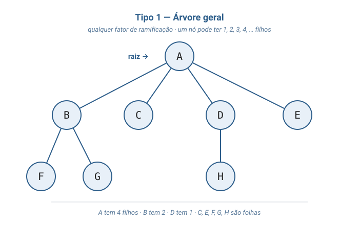
Tipo 2 — Árvore binária
Restrição: no máximo 2 filhos por nó, distinguidos como esquerdo e direito. Note: ainda não é BST — os valores estão em qualquer ordem (5 está à direita de 7; 9 está à esquerda de 3).
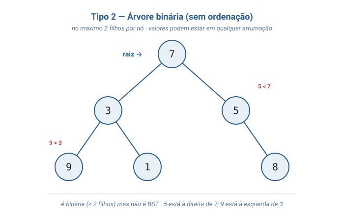
Tipo 3 — Árvore binária de busca (BST)
Acrescenta a regra: todos os valores à esquerda são menores; todos à direita são maiores — e essa regra vale recursivamente, em cada subárvore. É o que permite busca em O(log n) quando a árvore está balanceada.
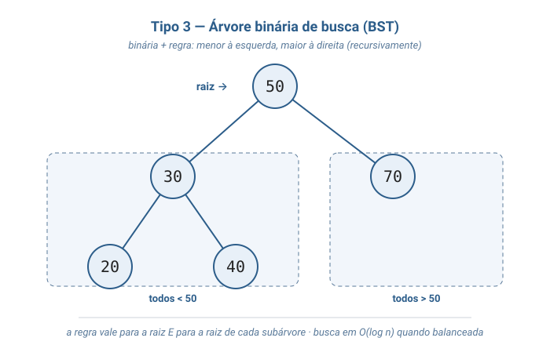
Tipo 4 — Árvore rubro-negra
BST + uma cor (vermelho ou preto) em cada nó, com
regras que garantem altura O(log n) mesmo após
inserções adversárias. É a variante usada em
std::map (C++) e TreeMap (Java).
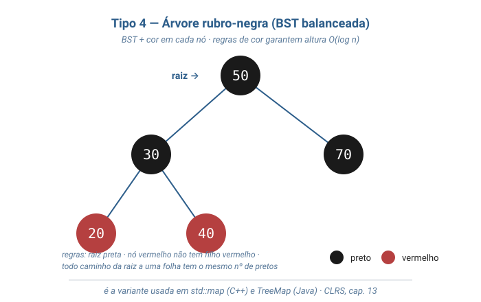
foco desta aula: Tipo 3 (BST). Rotações da rubro-negra e da AVL ficam para aula futura.
Parte B
Ciclo de vida de uma BST — passo a passo
criação · 5 inserções · 1 busca · as 3 travessias.
Passo 1 — arvore_criar()
Estado inicial: a árvore existe, mas está vazia — o
ponteiro raiz aponta para NULL.
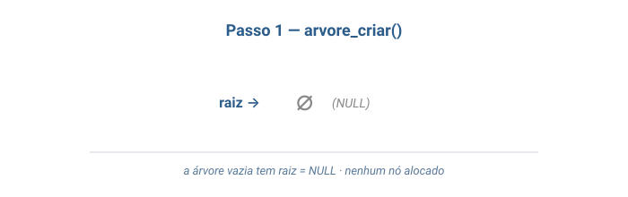
Passo 2 — inserir(50)
Primeira inserção em árvore vazia: o nó 50 vira a raiz,
com esq e dir ambos NULL.
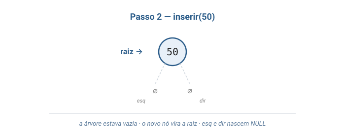
Passo 3 — inserir(30)
30 < 50 → desce à esquerda. Como o ponteiro
esq da raiz era NULL, o novo nó é alocado
ali mesmo.
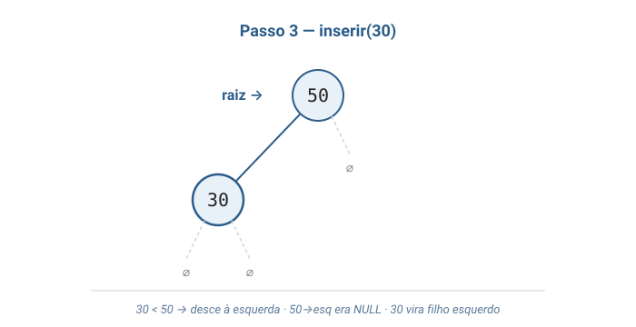
Passo 4 — inserir(70)
70 > 50 → desce à direita. Mesma lógica do passo anterior, agora do outro lado da raiz.
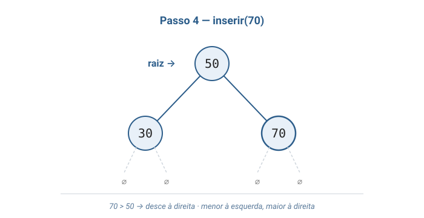
Passo 5 — inserir(20)
Agora a descida tem dois passos: 20 < 50 (vai para esq), depois 20 < 30 (vai de novo para esq). Aloca como filho esquerdo do 30.
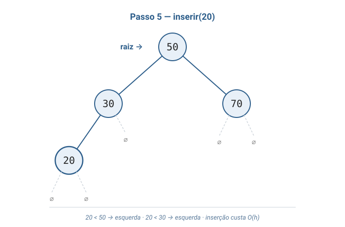
Passo 6 — inserir(40)
40 < 50 (esq), depois 40 > 30 (dir). O nó 40 vira filho direito do 30.
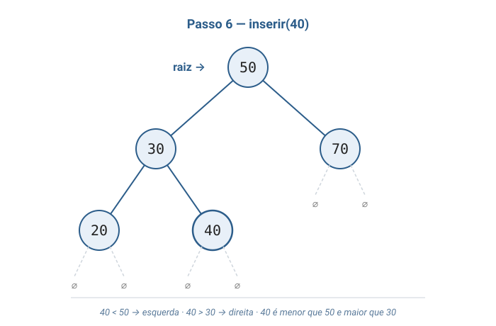
Passo 7 — buscar(40)
Buscar percorre o mesmo caminho de quando o nó foi inserido. Note as comparações: 40 < 50, 40 > 30, achou. Três comparações em 5 nós.
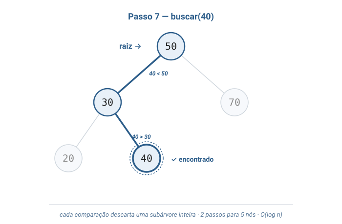
Passo 8 — pre_ordem()
Em pré-ordem (nó · esq · dir), a raiz vem primeiro e cada subárvore é toda explorada antes de saltar para a próxima.
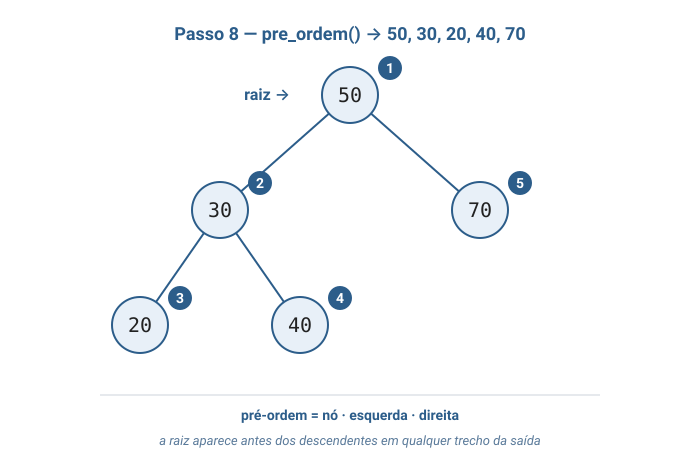
Passo 9 — in_ordem()
Em in-ordem (esq · nó · dir), a saída vem em ordem crescente — sem ordenação explícita. É a "ordenação implícita" prometida pelo axioma A7.
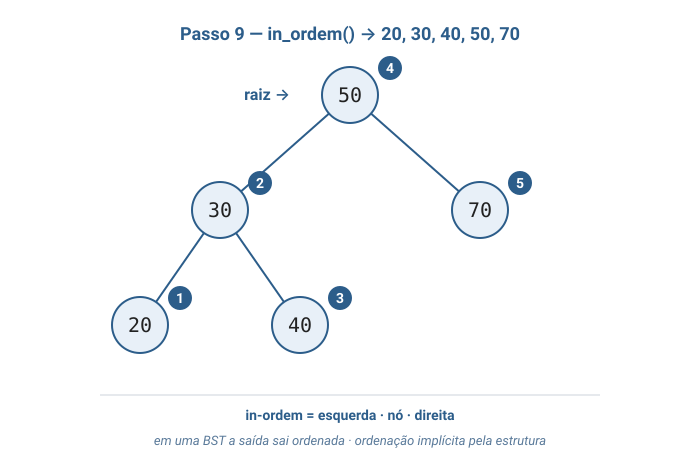
Passo 10 — pos_ordem()
Em pós-ordem (esq · dir · nó), folhas
primeiro, raiz por último. É exatamente a ordem que
destruir precisa: nunca libera um nó cujos filhos ainda
estão lá.
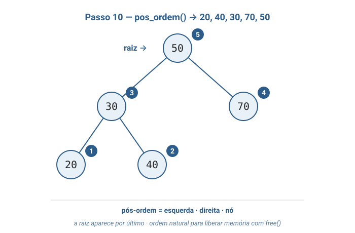
Bloco 3
Por que árvores existem?
Como o autocomplete do Google funciona?
Você digita "alg" e em milissegundos aparecem "algoritmo", "algoritmos", "algoritmos de ordenação"...
A estrutura precisa responder com extrema rapidez:
- "Existem palavras que começam com este prefixo?"
- "Quais são as mais relevantes?"
Uma lista que percorre tudo a cada nova letra seria lenta demais. A solução envolve árvores.
Como uma BST ajuda
Mantenha o dicionário em uma BST de palavras. Para checar se uma palavra está lá, desça da raiz comparando: se vem antes do nó atual, à esquerda; se vem depois, à direita.
Em uma BST balanceada com 1 milhão de palavras, a busca termina em ~20 passos (log₂ 1.000.000 ≈ 20). Em uma lista, percorreria 500.000 itens em média.
A versão real do Google usa uma variante (Trie) porque busca por prefixo, não por palavra exata. Mas Trie é uma árvore.
Turma, praticamente toda busca rápida sobre dados ordenados em sistemas reais é, por baixo do capô, alguma variante de árvore: B-trees indexam tabelas de bancos (PostgreSQL, MySQL, SQLite), rubro-negras ordenam contatos no celular, Tries alimentam autocomplete e correção ortográfica. Entender a BST é entender o tijolo fundamental.
Bloco 4
Analogias
1. Árvore genealógica
Toda família tem um casal de bisavós no topo; eles tiveram filhos; os filhos tiveram netos; os netos tiveram bisnetos. Cada pessoa aparece uma única vez, tem um pai e pode ter vários filhos. Para encontrar alguém, você desce da raiz seguindo ramos, sem nunca voltar.
A árvore de dados é exatamente isso — com a restrição extra de no máximo dois filhos, "filho esquerdo" e "filho direito".
2. Sumário de um livro técnico
Capa lista os capítulos: 1, 2, 3, 4. Cada capítulo se divide em seções 1.1, 1.2, 1.3. Cada seção em sub-seções 1.1.1, 1.1.2. Hierarquia é uma árvore — não binária, porque um capítulo pode ter mais de duas seções, mas a ideia é a mesma.
Para chegar à seção 1.1.2, você desce: livro → cap. 1 → seção 1.1 → sub-seção 1.1.2. Nunca precisa folhear o cap. 3 para chegar à 1.1.2.
Organização hierárquica = acesso eficiente. É o que a BST faz com números em vez de seções.
Bloco 5
Código em C
BST com inserir, buscar, as três travessias
e destruir — todas recursivas.
Um único arquivo: arvore.c
Tudo num só arquivo:#includes · structs · funções da TAD ·main()demonstrativa. Separação em.h+.cé tema da aula futura sobre organização de projetos em C.
Includes + structs + criar
Começamos pelo esqueleto: os dois typedef
struct que materializam o "nó" (com seus dois ponteiros
esq e dir) e a "árvore" (só com o ponteiro
raiz), mais a função que cria uma árvore vazia.
#include <stdio.h>
#include <stdlib.h>
typedef struct No {
int valor;
struct No* esq;
struct No* dir;
} No;
typedef struct Arvore {
No* raiz;
} Arvore;
Arvore* arvore_criar(void) {
Arvore* a = malloc(sizeof(Arvore));
if (a == NULL) { printf("erro: memoria insuficiente\n"); exit(1); }
a->raiz = NULL;
return a;
}
int arvore_vazia(Arvore* a) {
return a->raiz == NULL;
}
inserir — recursão clássica
Esta é a forma recursiva canônica de inserir em uma BST. Acompanhe a estrutura: caso base quando a subárvore é vazia (aloca e devolve o novo nó), e caso recursivo que desce à esquerda ou à direita conforme a propriedade da BST.
static No* inserir_no(No* raiz, int valor) {
// caso base: subarvore vazia → aloca aqui
if (raiz == NULL) {
No* novo = malloc(sizeof(No));
if (novo == NULL) { printf("erro: memoria insuficiente\n"); exit(1); }
novo->valor = valor;
novo->esq = NULL;
novo->dir = NULL;
return novo;
}
if (valor == raiz->valor) return raiz; // duplicata ignorada
// propriedade da BST: menor à esquerda, maior à direita
if (valor < raiz->valor)
raiz->esq = inserir_no(raiz->esq, valor);
else
raiz->dir = inserir_no(raiz->dir, valor);
return raiz;
}
void arvore_inserir(Arvore* a, int valor) {
a->raiz = inserir_no(a->raiz, valor);
}
buscar — mesma descida, sem alocar
Buscar tem o mesmo formato de inserir — desce comparando
pela propriedade da BST — só que sem alocar nada: ou acha
o valor pelo caminho (retorna 1), ou bate em NULL e responde
que não existe (retorna 0).
static int buscar_no(No* raiz, int valor) {
if (raiz == NULL) return 0; // chegou em NULL → nao encontrou
if (valor == raiz->valor) return 1; // achou
// cada comparacao descarta metade da arvore
if (valor < raiz->valor) return buscar_no(raiz->esq, valor);
else return buscar_no(raiz->dir, valor);
}
int arvore_buscar(Arvore* a, int valor) {
return buscar_no(a->raiz, valor);
}
As três travessias — mesmo esqueleto
Repare como as três funções abaixo têm exatamente o mesmo
esqueleto: caso base em NULL, depois três linhas
— visitar o nó, descer à esquerda, descer à direita. A única
diferença é a ordem dessas três linhas, e é
isso que dá nome a cada travessia.
// PRE-ORDEM: no, esquerda, direita
static void pre_ordem_no(No* raiz) {
if (raiz == NULL) return;
printf("%d ", raiz->valor);
pre_ordem_no(raiz->esq);
pre_ordem_no(raiz->dir);
}
// IN-ORDEM: esquerda, no, direita → ordem crescente em BST
static void in_ordem_no(No* raiz) {
if (raiz == NULL) return;
in_ordem_no(raiz->esq);
printf("%d ", raiz->valor);
in_ordem_no(raiz->dir);
}
// POS-ORDEM: esquerda, direita, no → ordem natural para liberar memoria
static void pos_ordem_no(No* raiz) {
if (raiz == NULL) return;
pos_ordem_no(raiz->esq);
pos_ordem_no(raiz->dir);
printf("%d ", raiz->valor);
}
Turma, atenção ao destruir: ele tem
que ser em pós-ordem. Se a gente chamar
free(raiz) antes de liberar os filhos,
perdemos os ponteiros esq e
dir — eles vivem dentro do nó que acabou de
ser liberado — e a subárvore inteira vira memory leak.
Filhos primeiro, pai depois. Sempre.
destruir + main
Para fechar: destruir em pós-ordem (filhos
primeiro, pai depois — sem isso, perdemos os ponteiros) e uma
main demonstrativa que insere 5 valores, busca dois e
imprime as três travessias.
static void destruir_no(No* raiz) {
if (raiz == NULL) return;
destruir_no(raiz->esq); // filhos primeiro (POS-ORDEM)
destruir_no(raiz->dir);
free(raiz); // pai por ultimo
}
void arvore_destruir(Arvore* a) { destruir_no(a->raiz); free(a); }
int main(void) {
Arvore* a = arvore_criar();
arvore_inserir(a, 50);
arvore_inserir(a, 30);
arvore_inserir(a, 70);
arvore_inserir(a, 20);
arvore_inserir(a, 40);
printf("Buscar 40: %s\n", arvore_buscar(a, 40) ? "encontrado" : "nao encontrado");
printf("Buscar 99: %s\n", arvore_buscar(a, 99) ? "encontrado" : "nao encontrado");
printf("Pre-ordem: "); arvore_pre_ordem(a);
printf("In-ordem: "); arvore_in_ordem(a);
printf("Pos-ordem: "); arvore_pos_ordem(a);
arvore_destruir(a);
return 0;
}
Compilando e rodando
Como é tudo um único arquivo, a compilação fica em uma linha — e a saída esperada confirma a busca e as três travessias funcionando.
gcc -Wall -Wextra -o arvore_demo arvore.c
./arvore_demo
Saída esperada:
Buscar 40: encontrado
Buscar 99: nao encontrado
Pre-ordem: 50 30 20 40 70
In-ordem: 20 30 40 50 70
Pos-ordem: 20 40 30 70 50
In-ordem: 20 30 40 50 70 = a prova empírica da
ordenação implícita da BST (axioma A7).
Bloco 6
Exercícios práticos
Respostas aparecem com um clique — tentem antes.
Exercício 1 — Construa a árvore na mão
Insira em uma BST vazia, nesta ordem: 8, 3, 10, 1, 6, 14, 4, 7.
Desenhe a árvore resultante e escreva a saída esperada das três travessias.
8
/ \
3 10
/ \ \
1 6 14
/ \
4 7
- Pré-ordem:
8 3 1 6 4 7 10 14 - In-ordem:
1 3 4 6 7 8 10 14← ordem crescente - Pós-ordem:
1 4 7 6 3 14 10 8
Exercício 2 — arvore_contar
Adicione ao arvore.c uma função
int arvore_contar(Arvore* a) que devolve o número total
de nós. Use uma auxiliar recursiva no estilo das travessias.
static int contar_no(No* raiz) {
if (raiz == NULL) return 0;
return 1 + contar_no(raiz->esq) + contar_no(raiz->dir);
}
int arvore_contar(Arvore* a) { return contar_no(a->raiz); }
NULL retorna 0; caso geral combina 1 (o próprio nó)
com os dois lados.
Exercício 3 — Altura da árvore
Implemente int arvore_altura(Arvore* a). Convenções:
árvore vazia tem altura -1; árvore com só a raiz, 0.
Dica: altura(no) = 1 + max(altura(esq), altura(dir)).
Caso base: NULL → -1.
static int max_int(int a, int b) { return a > b ? a : b; }
static int altura_no(No* raiz) {
if (raiz == NULL) return -1;
return 1 + max_int(altura_no(raiz->esq), altura_no(raiz->dir));
}
int arvore_altura(Arvore* a) { return altura_no(a->raiz); }
altura(NULL) = -1 faz uma folha ter
1 + max(-1, -1) = 0 — como esperado.
Exercício 4 — Demonstrando a degeneração
Crie uma segunda demonstração na main(): insira
1, 2, 3, 4, 5, 6, 7 em ordem crescente. Imprima as
três travessias e a altura (use arvore_altura do
Exercício 3). Critério: altura deve ser 6.
Arvore* b = arvore_criar();
for (int x = 1; x <= 7; x++) arvore_inserir(b, x);
printf("Altura (degenerada): %d\n", arvore_altura(b)); // 6
printf("Pre-ordem: "); arvore_pre_ordem(b); // 1 2 3 4 5 6 7
printf("In-ordem: "); arvore_in_ordem(b); // 1 2 3 4 5 6 7
printf("Pos-ordem: "); arvore_pos_ordem(b); // 7 6 5 4 3 2 1
arvore_destruir(b);
Turma, antes de olhar a resposta do próximo: a abordagem
ingênua — "para cada nó, comparar com esq->valor
e dir->valor" — está errada.
Por que? Pensem num nó 5 que está na subárvore
direita de um nó 6...
Exercício 5 — Verificador da propriedade da BST
Implemente int arvore_eh_bst(Arvore* a) que retorna
1 se a árvore satisfaz a propriedade da BST, 0
caso contrário. Deve funcionar mesmo se alguém tiver mexido nos ponteiros
manualmente.
Dica: passe um intervalo válido [min, max] e restrinja-o
conforme desce.
#include <limits.h>
static int eh_bst_no(No* raiz, int min, int max) {
if (raiz == NULL) return 1;
if (raiz->valor <= min || raiz->valor >= max) return 0;
return eh_bst_no(raiz->esq, min, raiz->valor)
&& eh_bst_no(raiz->dir, raiz->valor, max);
}
int arvore_eh_bst(Arvore* a) {
return eh_bst_no(a->raiz, INT_MIN, INT_MAX);
}
5
com filho esquerdo 4 parece ok, mas se esse 5
estiver na subárvore direita de um 6, o 4
viola. O intervalo propagado captura essa restrição.
Referências
- Tenenbaum, Langsam & Augenstein — Estruturas de Dados Usando C, cap. 5, Árvores. Capítulo de cabeceira desta aula.
- Sedgewick, R. — Algoritmos em C, Partes 3 e 4. Travessias e análise probabilística da altura média.
Leituras complementares:
- CLRS — cap. 12 (BSTs), cap. 13 (rubro-negras), cap. 18 (B-trees).
- Ziviani, N. — Projeto de Algoritmos, cap. de árvores (PT-BR).
- Knuth, D. — TAOCP, vol. 1, §2.3 — Trees.
- Adelson-Velsky & Landis (1962) — artigo original da árvore AVL.
Fim — Aula 05
Próxima aula: AVL e rotações
Já vimos como a árvore degenera com inserções em ordem. A AVL conserta isso com rotações — e mantém a altura em O(log n) garantida.